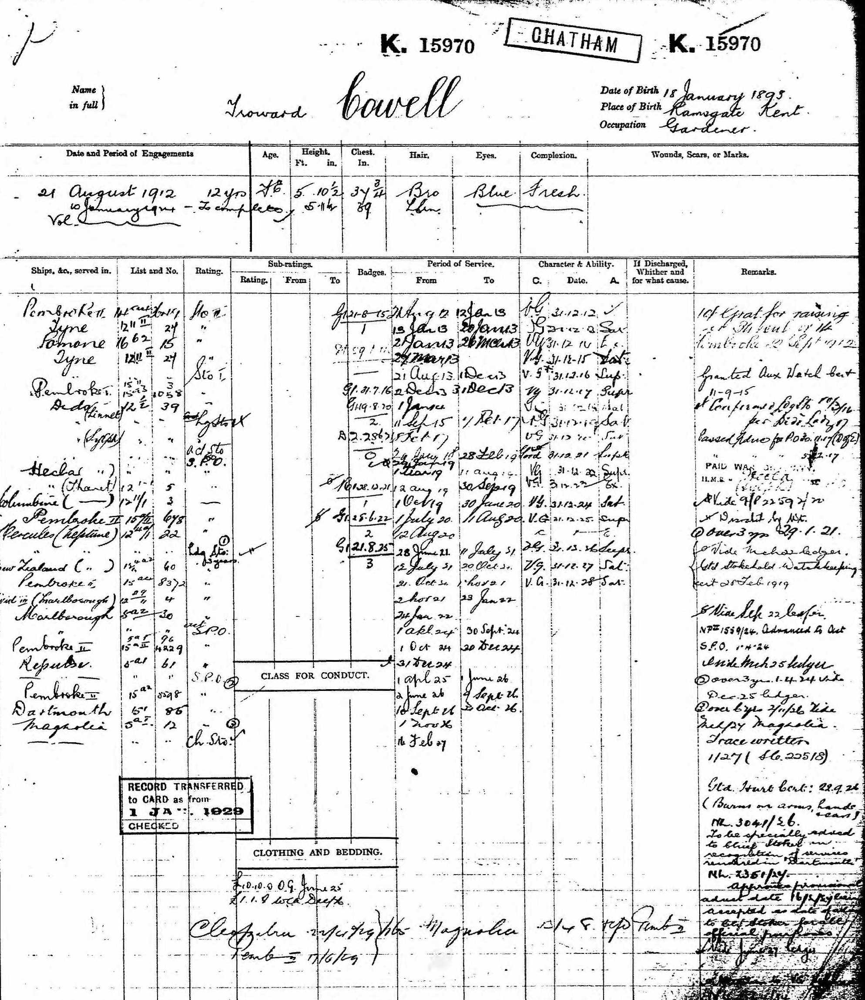
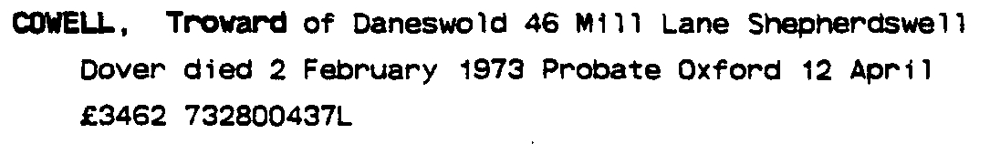
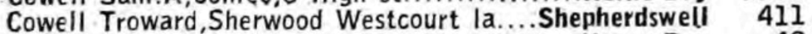
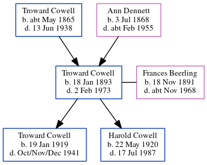

Troward Cowell 1893 - 1973
[ Home ] | [ Calendar ] | [ Surnames Index ] | [ Errors ] | [ Family History ]A x434 portsmouth rm police life pensioner ex royal navy and the child of Troward Cowell (a horseman) and Ann Dennett, Troward Cowell, the first cousin twice-removed on the mother's side of Nigel Horne, was born in Northwood, Kent, England on 18 Jan 18931,2,3,4,5,6, was baptised in Monkton, Kent, England on 26 Mar 1893 and married Frances Beerling (with whom he had 2 children: Troward and Harold Victor Neville) in Hendon, London, England on 24 Sept 19187.
During his life, he was living at Gore End Farm, Birchington, Kent, England on 31 Mar 19018 and on 2 Apr 19119; at 47 Amberley Road, Portsmouth, Hampshire, England on 29 Sept 19393; at Sherwood, Westcourt Lane, Shepherdswell, Kent in 1962; and at 46 Mill Lane, Shepherdswell, Kent in 1973. He served in the navy (Royal Navy - Pembroke II).
He died on 2 Feb 1973 in Dover, Kent, England5.
Parents
- Troward was born c. May 1865
- Ann was born on 3 Jul 1868
Children
- Troward was born on 19 Jan 1919
- Harold Victor Neville was born on 22 May 1920
Citations
- 1901 England Census Online publication - Provo, UT, USA: The Generations Network, Inc., 2005.Original data - Census Returns of England and Wales, 1901. Kew, Surrey, England: The National Archives of the UK (TNA): Public Record Office (PRO), 1901. Data imaged from the National
- 1911 England Census Online publication - Provo, UT, USA: Ancestry.com Operations, Inc., 2011.Original data - Census Returns of England and Wales, 1911. Kew, Surrey, England: The National Archives of the UK (TNA), 1911. Data imaged from the National Archives, London, England.
- 1939 Register - Findmypast (was the head of the household)
- England & Wales deaths 1837-2007 - Findmypast
- England & Wales, Death Index: 1984-2005 Online publication - Provo, UT, USA: The Generations Network, Inc., 2007.Original data - General Register Office. England and Wales Civil Registration Indexes. London, England: General Register Office. © Crown copyright. Published by permission of the Cont
- England & Wales, FreeBMD Birth Index, 1837-1915 Online publication - Provo, UT, USA: The Generations Network, Inc., 2006.Original data - General Register Office. England and Wales Civil Registration Indexes. London, England: General Register Office. © Crown copyright. Published by permission of the Cont
- England & Wales marriages 1837-2008 - Findmypast
- 1901 England, Wales & Scotland Census - Findmypast (was age 8 and the son of the head of the household)
- 1911 Census for England & Wales - Findmypast (was age 18 and the son of the head of the household)
Notes
Brown hair, blue eyes, height 5' 11".
Media
1901 UK Census

Troward Cowell - Naval Record

Troward Cowell - Frances Beerling - Marriage Bond

Troward Cowell - probate

Troward Cowell - 1962 Telephone Directory

Troward Cowell - Naval Record
England & Wales deaths 1837-2007 - BMD/D/1973/1/AZ/000289/012
England & Wales births 1837-2006 - BMD/B/1893/1/AZ/000132/081
Royal Navy Seamen 1899-1919 Transcription - GBM-ADM188-243281
England, Births & Baptisms 1538-1975 Transcription - R_884578932
1911 England, Wales & Scotland Census Transcription - GBC-1911-RG14-04479-0323-5
1901 England, Wales & Scotland Census Transcription - GBC-1901-0005518440
1911 England, Wales & Scotland Census Transcription - GBC-1911-RG14-04479-0323-3
1901 England, Wales & Scotland Census Transcription - GBC-1901-0005518437
1939 Register Transcription - TNA-R39-2257-2257I-007-10
Family Tree
Map
Generated by ged2site. Last updated on Jul 3, 2024
Known Issues
Residence record for 1973 contains no citation
Residence record for 1962 contains no citation
Listed in the residence for 1962, but spouse Frances Beerling is not
Location is Empty